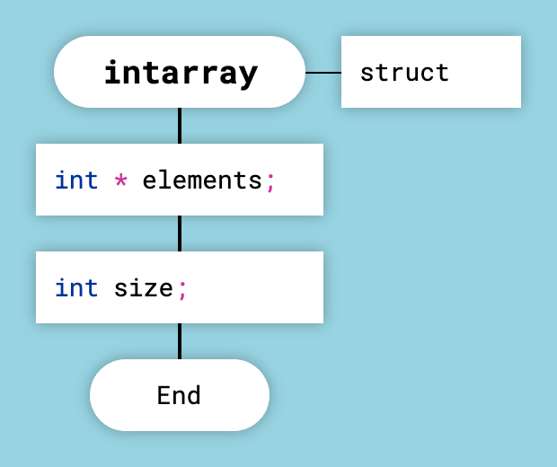
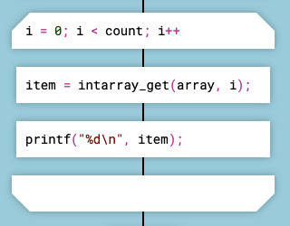
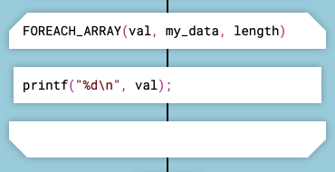
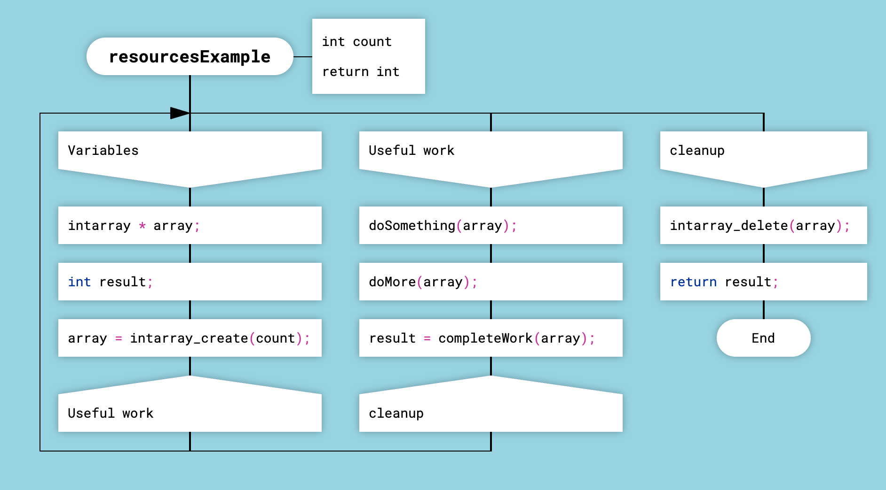

Генерация кода на языке Си

Экспортируемые функции автоматически добавляются в заголовок
Для модуля на языке ДРАКОН-Си ДраконТех генерирует два файла: исходный c-файл и заголовочный h-файл. Тела функций помещаются в исходный файл. В заголовочный файл генератор вставляет объявления экспортируемых функций.
Произвольный код в начале файла
Для того, чтобы поместить произвольный код в начало заголовочного файла, создайте функцию со специальным названием begin_header. Чтобы вставить произвольный код в начало исходного файла, создайте функцию с названием begin_source.
Структуры
Чтобы создать структуру (объект типа struct), создайте функцию и поместите ключевое слово struct в икону Формальные параметры справа от заголовка диаграммы. В диаграммах-структурах допускаются только иконы Действие. Содержимое икон Действие будет помещено в тело структуры.

Диаграмма-структура
struct intarray { int * elements; int size; };
По умолчанию структуры попадают в исходный файл перед функциями. Если пометить диаграмму-структуру как экспортируемую, генератор поместит соответствующую структуру в заголовочный файл перед объявлением экспортируемых функций.
Цикл Для
Генератор кода автоматически добавляет ключевое слово for перед выражением, которое находится в иконе Цикл Для. Писать слово for вручную не требуется.
Достаточно написать i = 0; i < count; i++, и генератор кода сформирует выражение for (i = 0; i < count; i++) { … }.

Цикл Для в ДРАКОН-Си
Если выражение в иконе Цикл Для заканчивается на круглую скобку, ДраконТех не будет добавлять ключевое слово for. Это полезно для итерации по контейнерам с применением макросов, например FOREACH_ARRAY(val, my_data, length).

Цикл с макросом
Объявление переменных
Переменные в диаграммах ДРАКОН-Си нужно объявлять в начале функции. На диаграммах типа "силуэт" лучше всего помещать объявления переменных в самой первой ветке силуэта. Если логика требует того, чтобы первая ветка выполнялась несколько раз, сделайте специальную ветку только для объявления переменных. На такую ветку нельзя ссылаться из других веток силуэта.
Освобождение ресурсов и памяти
Программирование на чистом Си, в отличие от Си++ и многих других языков, приятно из-за ощущения полного управления компьютером. Компьютер сделает точно то, что вы ему скажете. Си освобождает программиста от необходимости визуализировать магический код, который обильно помещают в программу большинство других языков.
Платой за удовольствие от контроля является дополнительная ответственность. Нужно вручную освобождать память и ресурсы. Нужно помечать указатели как собственные и заимствованные.
Обычный паттерн для освобождения ресурсов в Си: блок в конце функции под меткой cleanup. На эту метку должны переходить все пути через алгоритм.
В ДРАКОН-Си этот паттерн выглядит иначе. Если в функции есть обязательное освобождение ресурсов, эту функцию надо преобразовать в силуэт и в правой части силуэта, перед выходом, создать ветку cleanup. Все пути через диаграмму должны оканчиваться иконой Адрес, которая указывает на ветку cleanup.

Освобождение ресурсов в ветке cleanup